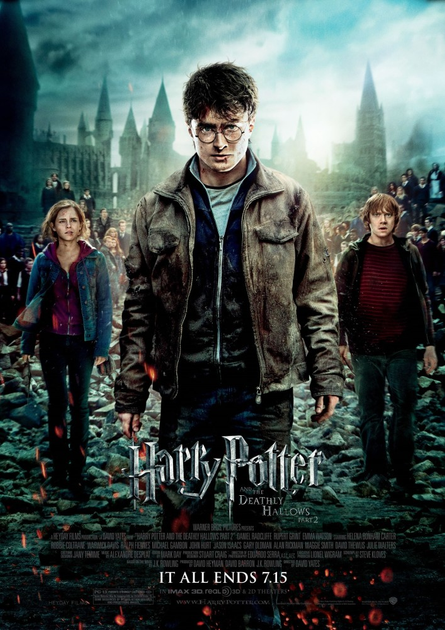
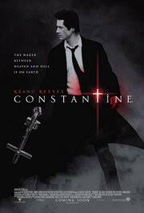

Гарри Поттер
Короткий опис фільму 1.
Жизнь десятилетнего Гарри Поттера нельзя назвать сладкой: его родители умерли, едва ему исполнился год, а от дяди и тётки, взявших сироту на воспитание, достаются лишь тычки да подзатыльники. Но в одиннадцатый день рождения Гарри всё меняется. Странный гость, неожиданно появившийся на пороге, приносит письмо, из которого мальчик узнаёт, что на самом деле он чистокровный волшебник и принят в Хогвартс — школу магии. А уже через пару недель Гарри будет мчаться в поезде Хогвартс-экспресс навстречу новой жизни, где его ждут невероятные приключения, верные друзья и самое главное — ключ к разгадке тайны смерти его родителей.
.jpg)
Россомаха
Короткий опис фільму 2.
История о неистовом и романтичном прошлом Росомахи, его сложных отношениях с Виктором Кридом и о зловещей программе Оружие Х. При этом Росомаха встречается со многими мутантами, и узнает несколько легенд о мире Людей Икс.

Константин
Короткий опис фільму 3.
Джону Константину удалось не только побывать в аду, но и вернуться обратно. Родившись с неугодным самому себе талантом — способностью распознавать помесь ангелов и демонов, которые бродят по земле в облике людей, — Константин под давлением обстоятельств пытается совершить самоубийство, лишь бы избавиться от мучительных видений. Но неудачно. Воскрешенный против собственной воли он снова оказывается в мире живых. Теперь, отмеченный печатью суицида и получивший временное право на жизнь, он патрулирует границу, разделяющую рай и ад, тщетно надеясь на обретение спасения путем сражения с земными ставленниками зла.